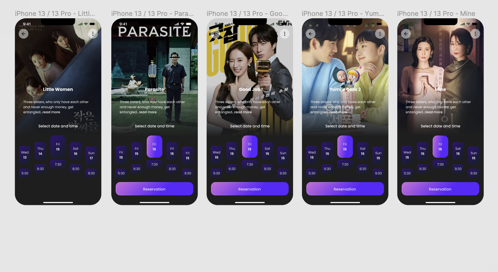

Cinematica
Mockup image credits: Image by mockup.store on Freepik Cinematica was a design project that I worked on and am still finishing! It started off with me following a simple totourial on UX and UI design and stemmed into the creation of Cinematica, a place where you can watch TV shows instead of movies!
Konect: Klosing The Gap in Tech
Group project completed during Kode with Klossy Data Science summer camp with two other Scholars. Our main goal with our website, Konect, is to inform all of the growing problem in the tech community in regards to diversity. Through data visualization, the truth about the communities within major tech companies, will be shown. Future implementations that we planned included a space where people can share their experiences and gain meaningful advice!